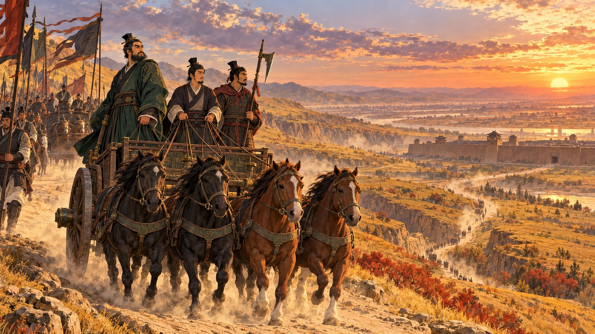
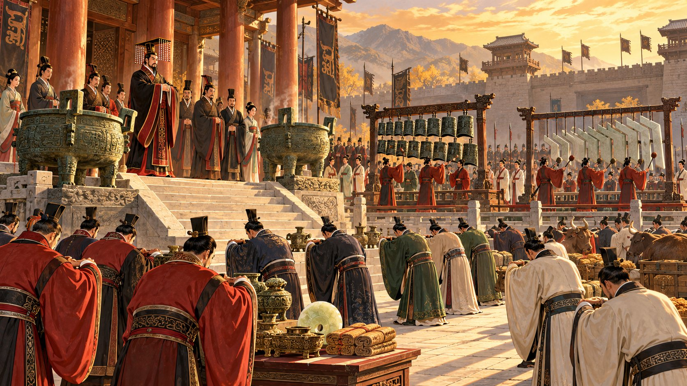
周天子靠三套制度管理天下：宗法決定誰繼承，封建決定誰管哪裡，井田決定土地怎麼分。
三者合起來，就是一個字——禮。
繼承人看的是嫡庶、長幼，
不看誰比較賢能。
天子把土地和人民分封給親族功臣；諸侯要朝貢，天子有難時出兵勤王。
最關鍵的規矩：只有天子能發動征伐。
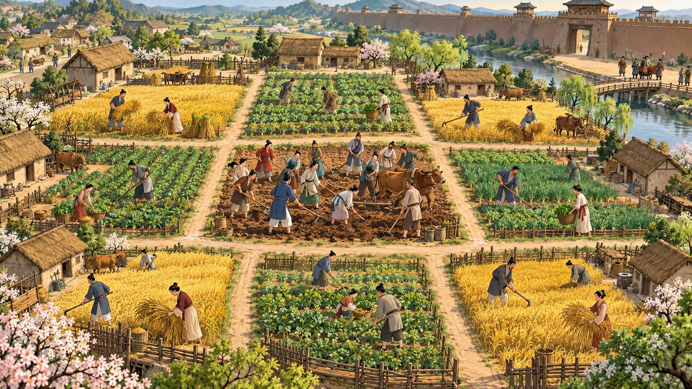
八家各耕自己的田，
但要先合力耕好中間的公田。
※ 這是孟子描述的理想型，實際是否如此整齊，學者看法不一。
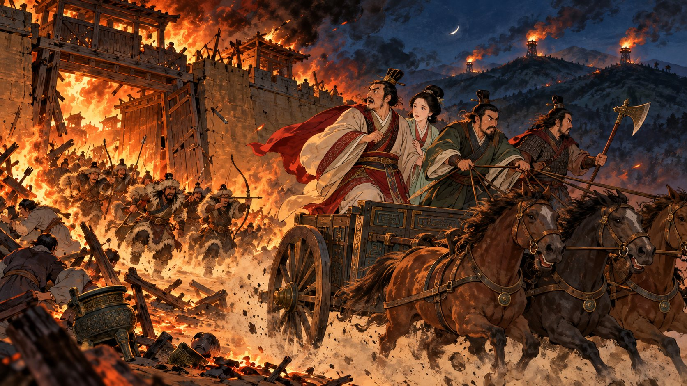
周幽王寵愛褒姒，廢掉王后和太子宜臼，改立褒姒之子——天子自己先破壞了宗法。
太子的外祖父申侯聯合犬戎攻破鎬京，幽王被殺。
宜臼即位為周平王，東遷雒邑——東周、春秋時代開始。
靠著殺父仇人擁立的天子，諸侯還會敬畏嗎？
※「烽火戲諸侯」見《史記》，今人多疑其真實性。
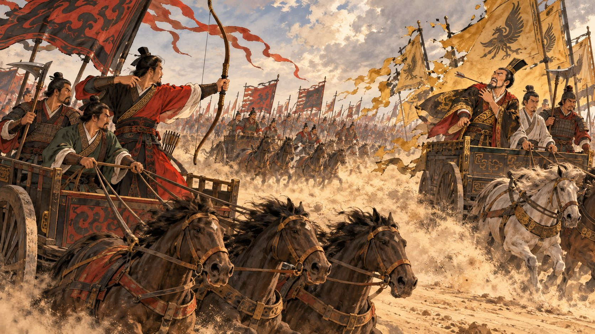
周桓王率諸侯討伐鄭國，反被打敗——鄭將祝聃一箭射中天子肩膀。
打贏了不追擊，當晚還派人慰問天子——敢動手，但名分還得顧。
周王和鄭國互換人質（前 720），天子降得和諸侯平起平坐；後來還被鄭國射中肩膀。
庶子殺嫡、旁支奪位，例如晉國的曲沃代翼。整個春秋：
「弒君三十六，
亡國五十二」
人們開墾私田，公田荒廢。魯國「初稅畝」（前 594）改成按畝收稅，等於承認私田。
「春秋無義戰。彼善於此，則有之矣。征者，上伐下也，敵國不相征也。」
征伐本是天子的權力，諸侯之間互打，本來就不合禮。
「爾貢包茅不入，王祭不共，無以縮酒，寡人是徵。」
打楚國的理由：你沒向天子進貢祭祀用的茅草——打著「尊王」的旗號。
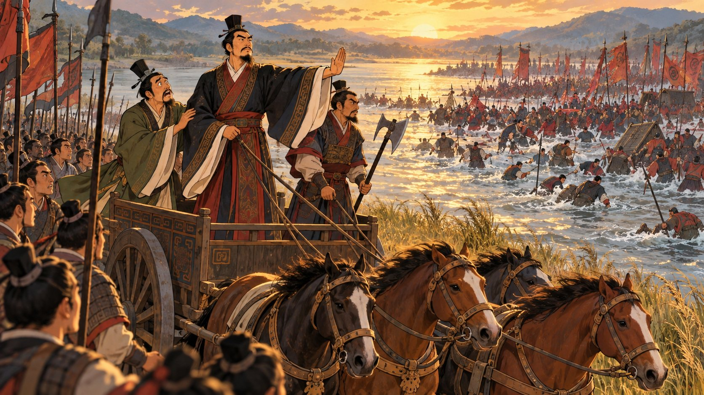
楚軍渡河到一半，大臣子魚說：快打！宋襄公說：不行，等他們排好陣。
結果宋軍大敗，宋襄公腿上中箭。
| 春秋 | 戰國 | |
|---|---|---|
| 出兵理由 | 要找名目：尊王、討不臣、報無禮 | 爭地、爭城，不必找理由 |
| 戰爭目的 | 爭當霸主，讓別國服從 | 吞併，最後一統天下 |
| 打仗方式 | 貴族乘車作戰，還講些禮節 | 全民皆兵，動輒斬首數萬 |
周天子東遷之後管不動諸侯
北方的晉、南方的楚開始爭霸
夾在兩強中間的小國——
鄭，就是本課的主角之一
獻公的父親武公，以旁支「曲沃」吞併正宗的晉君，再獲周天子承認。晉君的位子，本來就是搶來的。
獻公怕同宗的叔伯兄弟奪位，把他們圍在聚邑全部殺光。
滅耿、霍、魏；又「假道伐虢」，一口氣滅了虢、虞，晉國成為北方大國。
晉國攻打驪戎，得到美女驪姬。她生下奚齊，想讓兒子當太子。
第一步：收買寵臣向獻公進言，把三位公子調離首都——
申生去曲沃、重耳去蒲、夷吾去屈。
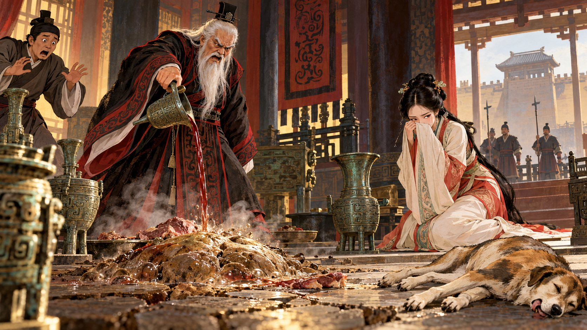
驪姬要太子申生祭祀亡母，把祭肉送回給獻公。肉在宮中放了六天，驪姬在裡面下毒。
有人勸申生去向父親說明真相，他拒絕了：
他不願讓年老的父親失去驪姬，最後在新城自縊而死。
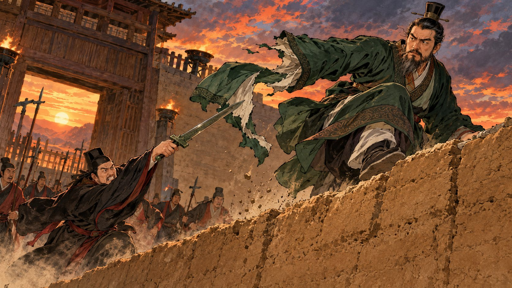
驪姬誣陷：兩位公子都知情！獻公派宦官寺人披到蒲城抓重耳。
重耳逃往狄，夷吾隔年逃往梁。 記住這個斬下衣袖的人
秦穆公即位後，娶了晉獻公的女兒伯姬，這就是「秦晉之好」。
他用五張黑公羊皮贖回淪為奴僕的百里奚，委以國政，人稱「五羖大夫」。
但秦國想往東走進中原，黃河邊上擋著一個晉國。
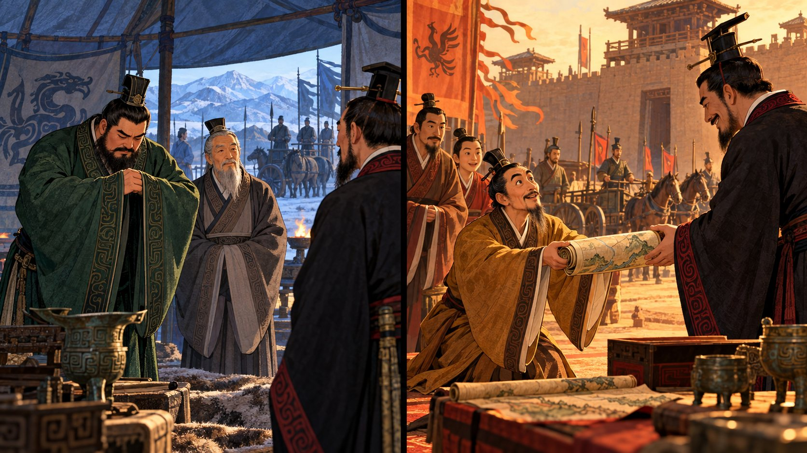
獻公一死，秦穆公派公子縶分別去狄、梁弔問兩位公子。重耳辭謝，夷吾卻許諾割地。
夷吾猜忌多疑、坐不穩王位——這對秦國反而有利。
夷吾向姊夫秦穆公求助：只要送我回國當國君，就割讓河外五座城。
秦國派兵護送，夷吾即位。然後——「既而不與」，一座城也沒給。
擁立他的功臣里克也被逼死。里克臨死說：
「欲加之罪，其無辭乎？」
「重施而報，君將何求？重施而不報，其民必攜；攜而討焉，無眾必敗。」
借了：他還，我們賺；他不還，晉國人心散，正好討伐。
「天災流行，國家代有。救災恤鄰，道也。行道有福。」
哪個國家沒有天災？救鄰國是道義。
「其君是惡，
其民何罪？」
可惡的是晉君，百姓沒有錯。
秦國運糧的船隊從雍城一路接到絳城，史稱「泛舟之役」。
隔年秦國鬧饑荒，向晉借糧——晉惠公拒絕了。
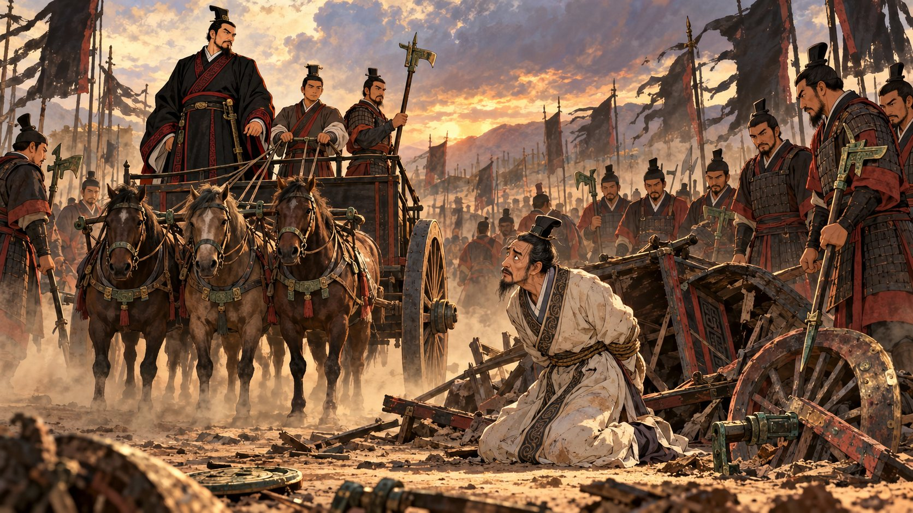
秦穆公出兵，俘虜晉惠公。
秦穆姬（惠公的姊姊）帶著孩子登臺踩在柴堆上，以死相逼，穆公才放惠公回國。
代價：太子圉到秦國當人質，秦穆公把女兒懷嬴嫁給他。
前 638 年，子圉丟下懷嬴偷跑回國；惠公死後即位為晉懷公——秦國又被晉國背叛一次。
按 → 一站一站走
右下角的「恩仇簿」
會記下每一國怎麼對他
狄人把俘來的女子季隗嫁給重耳。十二年後他要離開，對季隗說：
（我都二十五歲了，再等二十五年就進棺材了！我等你。）
為什麼離開？晉惠公派寺人披又來刺殺，只好遠走齊國。
衛文公不以禮相待。一行人餓到向鄉下人討飯，對方卻遞來一塊土。
重耳氣得要拿鞭子打人，舅舅子犯（狐偃）攔住他：
土就是土地——這是上天要把國家交給你。
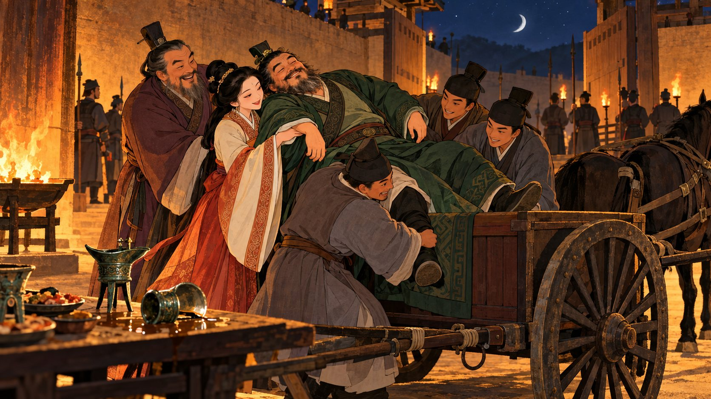
齊桓公把宗室女齊姜嫁給他，送馬二十乘（八十匹）。重耳過得太舒服，不想走了。
齊姜和子犯合謀把他灌醉，抬上車送出齊國。醒來的重耳拿著戈追打子犯。
曹共公聽說重耳「駢脅」——肋骨長成一整片，竟趁他洗澡時隔著簾子偷看。
只有大夫僖負羈偷偷送來一盤飯，飯裡藏著玉璧。重耳收下飯，退回玉璧。
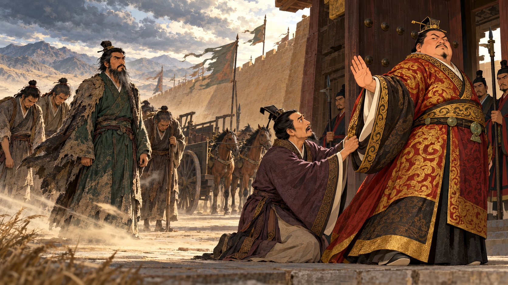
宋襄公剛打了敗仗，仍送他馬二十乘。到了鄭國，鄭文公卻不以禮相待。
大夫叔詹勸諫：這位公子有天助，又是同宗，應該好好招待。鄭文公不聽。
楚成王設宴，問：「公子若回到晉國，拿什麼報答我？」
萬一兩國打仗，我先退兵三舍（一舍三十里，共九十里）。
楚將子玉聽了，請求殺掉重耳；楚成王不准。
秦穆公氣晉懷公逃跑，改押寶重耳，把五名宗室女子嫁給他，其中包括懷公的前妻懷嬴。
懷嬴捧水讓他洗手，重耳洗完隨手一甩，濺了她一身。懷嬴大怒：
重耳立刻脫去上衣自囚謝罪——他需要秦國。
秦軍護送重耳渡黃河。子犯奉上玉璧說：我跟著您犯了太多錯，請讓我離開。
重耳即位，是為晉文公，並派人在高梁殺了晉懷公。
流亡十九年，即位時六十二歲（《史記》）；
另一說據《左傳・昭公十三年》，為十七歲出亡。
惠公舊臣呂甥、郤芮密謀放火燒宮。來告密的，正是當年斬斷他衣袖的寺人披。文公不計前嫌接見，躲過一劫。
護送逃難的周襄王回京，得到南陽土地；圍原城約定三天，到期就撤軍：「信，國之寶也」。
在被廬大閱兵，擴編為上、中、下三軍，由郤縠、狐偃、欒枝、先軫等人分掌三軍。
① 楚國圍攻親晉的宋國，宋向晉求救
② 晉國不直接救宋，改打楚的盟國曹、衛，俘虜曹共公——報仇；下令不准侵犯僖負羈家——報恩
③ 楚將子玉被激怒，撤宋圍北上追擊
④ 晉軍退避三舍，到城濮才迎戰——還楚成王的人情
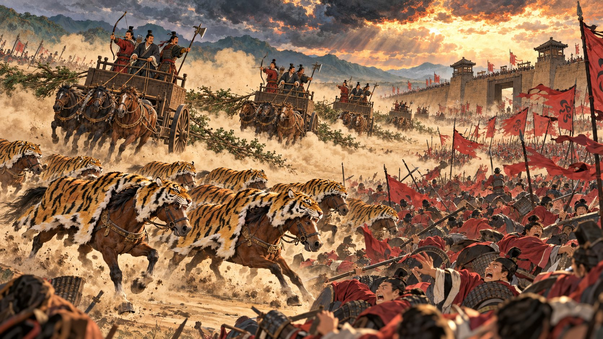
晉、宋、齊、秦聯軍，對上楚與陳、蔡等國。
胥臣把戰馬披上虎皮，先衝垮陳、蔡軍。
欒枝讓戰車拖著樹枝揚起塵土假裝逃跑，引楚軍追擊，再左右夾擊。
楚軍大敗，子玉自殺。
周襄王親臨，冊命晉文公為「侯伯」（諸侯之長），賜弓矢、車服。
那鄭國呢？戰前，鄭文公派兵支援楚國；楚軍一敗，他嚇得趕緊轉向晉國求和。
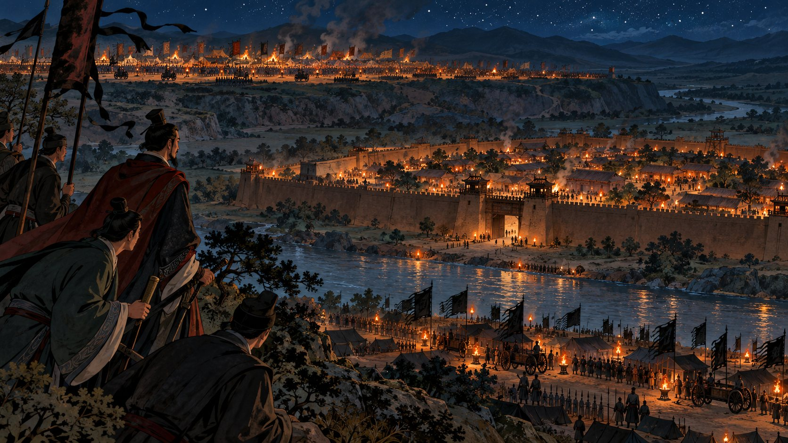
晉軍駐函陵（北）
秦軍駐氾南（南）
兩軍分開紮營——
這是破綻，還是巧合？
出兵的「名」：無禮於晉、貳於楚——
這就是春秋的師出有名。
秦穆公和鄭結盟，派杞子、逢孫、楊孫帶兵留守鄭國都城，名義是「保護」。
秦軍住進了鄭國家裡。
子犯請求追擊秦軍，晉文公不准：
「微夫人之力不及此。因人之力而敝之，不仁……吾其還也。」
流亡在晉的鄭公子蘭被迎回立為太子，鄭國藉此向晉求和，晉國才答應。
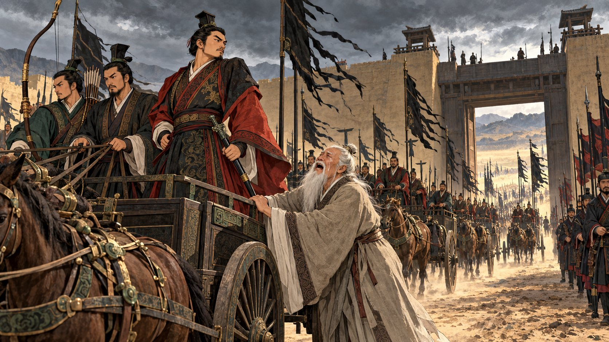
前 628 年冬，晉文公過世。駐鄭的杞子立刻密報秦國：
老臣蹇叔反對千里偷襲，秦穆公不聽。蹇叔在城門哭送：
鄭國商人弦高在路上撞見秦軍，拿出自己的四張熟牛皮、十二頭牛，假稱奉國君之命來犒勞：
同時派人飛報鄭國。鄭穆公一查，駐軍果然「束載、厲兵、秣馬」，當場請他們離開。
秦將孟明：「鄭有備矣，不可冀也。」只好滅了滑國回師。
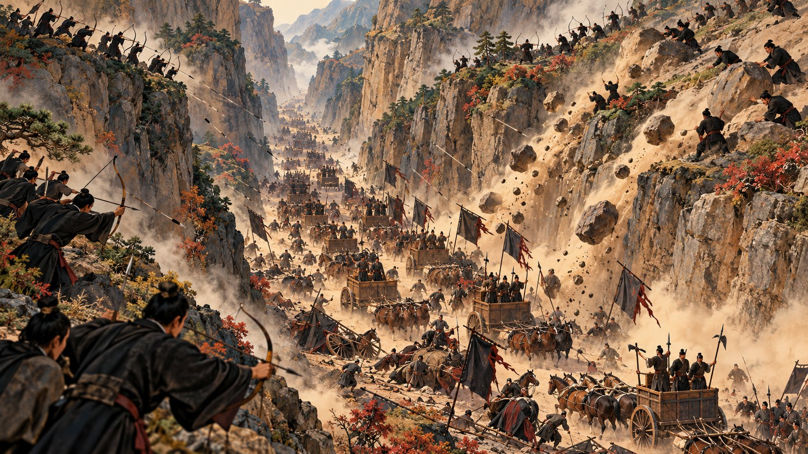
晉國大臣爭論：該不該打剛幫過我們的秦國？
新即位的晉襄公把喪服染黑上陣，在殽山伏擊，秦軍全軍覆沒，三位主將被俘。
秦伯素服郊次，鄉師而哭曰：「孤違蹇叔，以辱二三子，孤之罪也。」
穿著素服到郊外迎接敗軍，把罪攬在自己身上，繼續任用孟明。
從此兩國年年交兵。前 624 年，秦穆公渡河後燒掉船隻攻晉，奪回顏面。
但東進中原的路，始終被晉國擋住——秦國轉而稱霸西戎。
序章：《公羊傳・隱公元年》《禮記・大傳》《論語・季氏》《孟子》〈滕文公上〉〈盡心下〉〈離婁上〉《史記》〈周本紀〉〈太史公自序〉；《左傳》隱公三年、桓公五年、僖公四年、僖公二十二年、宣公十五年。
本篇：《左傳》莊公十六、二十五、二十八年；閔公元年；僖公四、五、六、九、十、十三、十四、十五、十七、二十二、二十三、二十四、二十五、二十七、二十八、三十年；宣公二年；昭公十三年；尾聲：僖公三十二、三十三年，文公二、三年。
《史記》〈晉世家〉〈秦本紀〉；《國語・晉語二》。
重耳出亡年齡：《史記》作四十三歲，《左傳・昭公十三年》叔向言「生十七年」而亡。本簡報兩說並列。
晉惠公許秦之地：《左傳》作「河外列城五」，《史記》作「河西八城」。本簡報從《左傳》。
城濮之戰「拖柴偽遁」：《左傳》為「輿曳柴」，即戰車拖曳樹枝。
情節插圖為 AI 生成的情境示意圖，依史料內容繪製，服飾、器物力求貼近先秦，但並非歷史寫真。地圖為示意圖，城邑位置為約略。